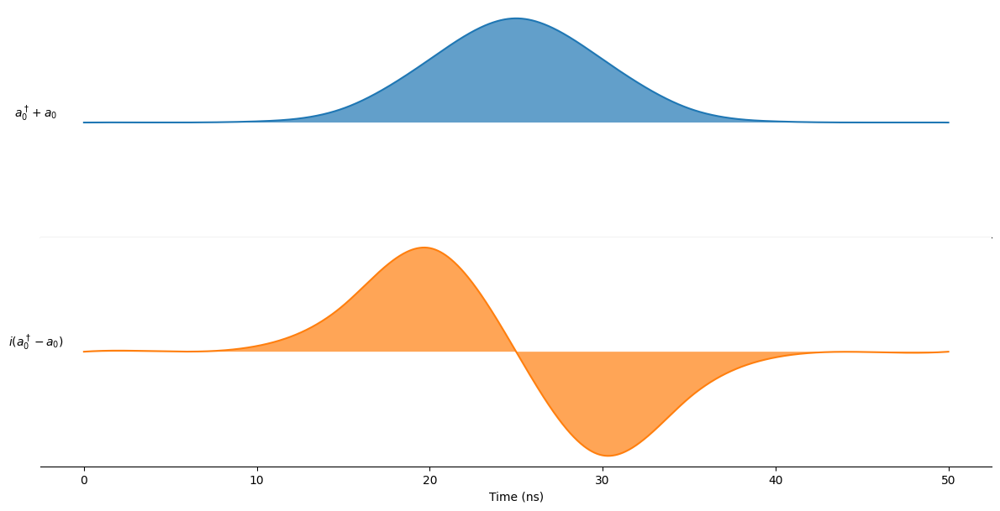
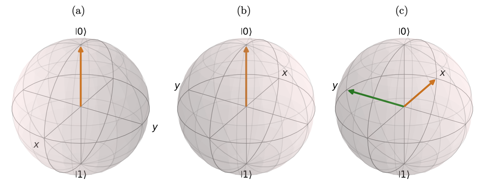
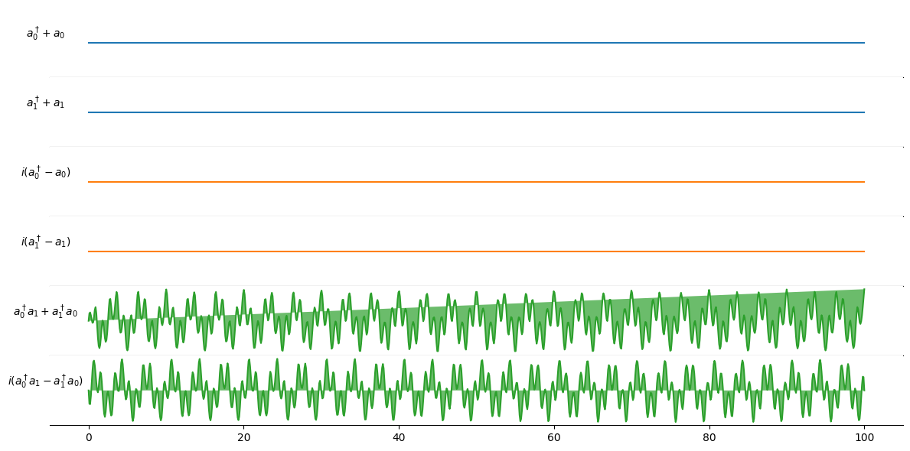

Quantum Gates
Single-qubit gates
Rotational X and Y-gates
On this page we are describing how a single-qubit gate that implements rotation around the \(x\)- or \(y\)-axis on the Bloch sphere can be performed.
We consider a driven weakly anharmonic qubit whose Hamiltonian in lab frame can be written as
where \(\omega_q\equiv \omega_q^{0\rightarrow 1}\) is the qubit frequency and \(\alpha = \omega_q ^{1\rightarrow 2}-\omega_q^{0\rightarrow 1}\) is the anharmonicity. The driving and control is given by
Here \(\Omega^x(t)\) and \(\Omega^y(t)\) are two independent quadrature controls, \(t_g\) is the total gate-time, and \(\omega_d\) is the drive frequency. Next we move into the rotating frame of the drive by performing the following unitary transformation \(U(t)=e^{i\omega_r t a^\dagger a}\), where \(\omega_r\) is the rotating frame frequency. The Hamiltonian in the rotating frame after having performed the rotating wave approximation reads
where \(\Delta \equiv \omega_q - \omega_r\) is the qubit detuning.
As a concrete example, assume that we apply a pulse at the qubit frequency \(\omega_d=\omega_q\), and choose the rotating frame of the drive \(\omega_r=\omega_d\). Then,
If we treat the Hamiltonian as an effective two level system (ignoring the anharmonic term) and make the replacement \((a^\dagger + a)\rightarrow \sigma_x\) and \((ia^\dagger-ia)\rightarrow \sigma_y\), we obtain
showing that an in-phase pulse (i.e. the \(\Omega^x(t)\) quadrature component) corresponds to a rotation around the \(x\)-axis while the out-of-phase pulse (i.e. the \(\Omega^y(t)\) quadrature component), corresponds to rotations about the \(y\)-axis. As a concrete example of an in-phase pulse, writing out the unitary evolution operator yields,
By defining the angle
which is the angle a state is rotated given a waveform envelope \(\Omega^x(t)\). This means that to implement a \(\pi\)-pulse on the \(x\)-axis one would solve \(\Theta(t)=\pi\) and output the signal in-phase with the qubit drive. Typically \(\Omega^x(t)\) is choosen as a gaussian pulse
In this simple example we assumed that we could ignore the higher levels of the qubit. In general leakage errors which take the qubit out of the computational subspace as well as phase errors can occur. To combat theses errors the so-called DRAG1 procedure (Derivative Reduction by Adiabatic Gate) is used. In doing so we apply an extra signal in the out-of-phase component, such that
where \(q\) is a scale parameter that needs to be optimized with respect to a \(\pi/2\)-pulse. Interchanging \(\Omega^x(t)\) and \(\Omega^y(t)\) in the equation above corresponds to DRAG pulsing the \(\Omega^y(t)\) component. The amplitude \(B\) is fixed such that
for a \(\pi\)-pulse with DRAG.
Example: X-rotation with DRAG
The following example shows how an \(R_X(\pi/2)\)-gate is implemented on the Sarimner using drag.

Virtual Z-gate
To implement the \(R_Z(\theta)\)-gate, we include a phase \(\phi\) to our drive
Upon initialization, all qubit drives are initialized with a phase of \(\phi=0\). Now, when a \(R_Z(\theta)\)-gate is performed we simply update the phase of the corresponding qubit drive, such that \(\phi\) shifts to \(-\theta\). The minus sign here signifies that we do a rotation of the Bloch sphere rather than the state itself.
Note: If a \(R_Z(\phi)\)-gate is performed at the end of a quantum circuit, this gate will not have any effect on the quantum state.
Example: Hadamard Gate Decomposition and Phase Correction
The Hadamard gate (\(H\)) can be decomposed into a sequence of rotations: a \(\pi\) rotation around the Z-axis followed by a \(\pi/2\) rotation around the Y-axis. Mathematically, this is expressed as \(H = iR_Y(\pi/2)R_Z(\pi)\), where \(i\) is a global phase factor. Notably, this decomposition allows for implementing the Hadamard gate using only one physical gate.
The following example simulates the Hadamard gate applied to the initial state \(\ket{0}\).
While the intended operation is to transform \(\ket{0}\) to the equal superposition state \(\ket{+}=(\ket{0}+\ket{1})/\sqrt{2}\), the simulation initially yields \(\ket{-}=(\ket{0}-\ket{1})/\sqrt{2}\). This difference arises because the \(R_Z(\pi)\) gate performs a virtual rotation on the Bloch sphere. This is illustrated in the figure below, where figure (a) shows the initial state \(\ket{0}\). (b) shows the virtually rotated Bloch sphere after the \(R_Z(\pi)\)-gate, and (c) shows the final-state after the \(R_Y(\pi/2)\)-rotation with the green arrow showing the direction of the drive.

The state is however unaffected by this virtual rotation of the Bloch sphere. Therefore, to obtain the correct phase factor of our state, we can use the phase attribute of the compiler class. This attribute holds the phase corrections for all qubits, i.e. how much we have rotated the Bloch sphere for each qubit. As such, applying a rotation gate (rz) with this phase to the final state will yeild a state with the correct phase.
Multi-qubit gates
Two-qubit gates between two qubits labeled \(i\) and \(j\) are performed using a time-dependent coupling term of the form
where the time-dependent coupling term is given by
where \(\omega_d\) is the driving frequency, and \(g_0\) is the amplitude, and \(\phi\) is a phase. The drive-frequency is choosen to be the transition frequency for the corresponding gate, for example \(\omega_d=\omega_1-\omega_2\) for the ISWAP-gate and \(\omega_d=\omega_1+\alpha_1-\omega_2\) for the CZ-gate.
Example
To following example shows the execution of a CZ-gate.

-
F. Motzoi, J. M. Gambetta, P. Rebentrost, and F. K. Wilhelm. Simple pulses for elimination of leakage in weakly nonlinear qubits. Phys. Rev. Lett., 103:110501, Sep 2009. doi:10.1103/PhysRevLett.103.110501. ↩